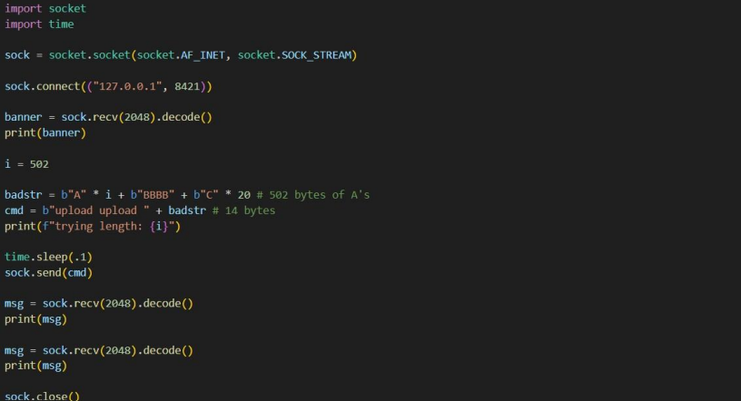

Vulnerability Discovery
Through static analysis of the FML Server source code, I identified a critical flaw in the isASCII() function within parse.c. The server fails to perform bounds checking on user-supplied commands, allowing a 1000-byte buffer to be overrun.
Exploit Components
- Vulnerability: Stack-based Overflow
- Trigger:
HandleConnection()Buffer - Payload: Reverse TCP Shell
- Encoder: shikata_ga_nai
- Strategy: JMP ESP / NOP Sled
Memory Manipulation
Hijacking the Execution Flow
By utilizing x32dbg and custom fuzzing scripts, I determined the exact offset required to overwrite the EIP (Extended Instruction Pointer). This allowed me to redirect the CPU to a JMP ESP instruction, jumping directly into my malicious payload.
- Offset Calculation: Pinpointing the crash point in memory.
- Bad Char Analysis: Identifying characters that break the exploit.
- NOP Sled: Ensuring reliable execution of the shellcode.

Custom Payload Construction
I used msfvenom to generate a Windows Reverse TCP Shell, specifically avoiding "Bad Characters" found during the assessment. The payload was encoded with shikata_ga_nai to bypass basic detection and ensure the shellcode remained functional within the targeted stack frame.
Impact Assessment
A successful exploit grants the attacker a full interactive shell on the server host. This allows for total system compromise, including unauthorized file access, lateral movement across the network, and the installation of persistent backdoors.